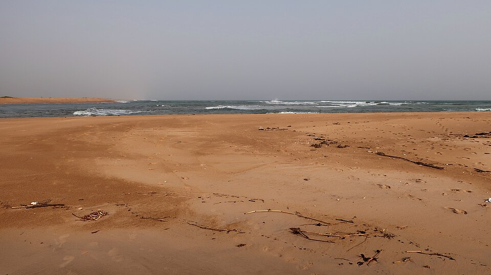

Nature et
paysages
Des villages sur l'eau, la savane du nord et les plages de l'Atlantique.
Ganvié

Sur le lac Nokoué, près de Cotonou, Ganvié est un village construit sur pilotis. Les habitants se déplacent en pirogue, et on y trouve même un marché flottant.
Le parc national de la Pendjari

Au nord-ouest du pays, la Pendjari est l'une des réserves les mieux préservées d'Afrique de l'Ouest. On peut y voir des éléphants, des buffles, des hippopotames et parfois des lions. Elle fait partie du complexe W-Arly-Pendjari, inscrit à l'UNESCO.
Les chutes de Kota

Près de Natitingou, dans l'Atacora, les chutes de Kota sont un endroit agréable pour se baigner et pique-niquer, surtout pendant la saison des pluies.
Grand-Popo et la Bouche du Roy

À l'ouest de la côte, Grand-Popo offre de longues plages. Non loin de là, à la Bouche du Roy, le fleuve Mono rejoint l'océan au milieu des mangroves.